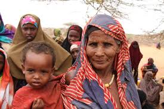

The Somali People of Kenya
Brief Overview
The Somali tribe of Kenya were colonise the British, French and Italian in the 1960s However, the French territory remained separate, gaining independence in 1977 and forming the country of Djibouti.
How the Somali came to settle
All Somali people are believed to have originated in the Ogaden region of southern Ethiopia. Today, Somalis are the only tribe found in their homeland country of the Republic of Somalia. Members of this tribe also reside in the country of Djibouti.
Foods and drinks of the Somali

The traditional diet of the Taita consisted of bananas, pumpkins, cassava, beans, sweet potatoes, cowpeas, and millet. Occasionally, this diet would be supplemented with game meat hunted from the plains. However,
once the Taita started growing maize (corn), and after the government restricted hunting,
ugali and green cooked vegetables, especially became their staple food.
Why Somali culture are unique

The Somali tribe speaks the Somali language. It the only language spoken by the entire Somali people; however, variations and dialects of the Somali language are spoken by different clans living in Somalia, Djibouti, and Ethiopia, as well as in Kenya. Linguistic skills including poetry and good speech are highly valued among all Somali clans. .
Economic activities of taitas

In their native Northeastern Province, Somalis practice a nomadic pastoralist way of life, keeping herds of camels, sheep, indigenous cattle, and some goats